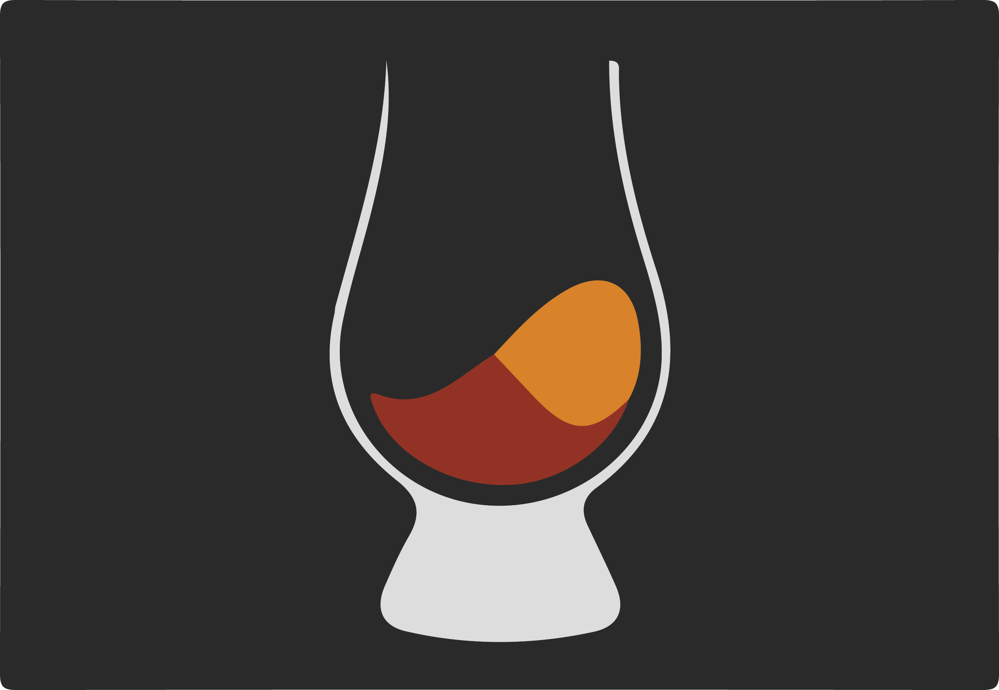

Toggle navigation
Scotch AI - MEAN Based Virtual Assistant
Get Started
List of Commands
Helpful Links
Scotch Tutorial
GitHub Repo
Anyang Library
Google Places API
Weather Underground API
Wolfram Alpha API

Hello, sir.
Simply say:
"Hey Scotch"
to begin.
You:
>
Did we get this right?
You got it!
Uh... Let's try that again!
Scotch AI:
> I am sorry, sir. That is beyond my capability.